| 「奄美の画家」の裸婦スケッチ: 無数の『田中一村』たちに贈る物語 アーティストラブ | |
| 角間貴生 | |
| yumelife (2014) | |
「奄美の画家」の裸婦スケッチ
無数の『田中一村』たちに贈る物語
アーティストラブ12
角間貴生
出版工房ゆめらいふ
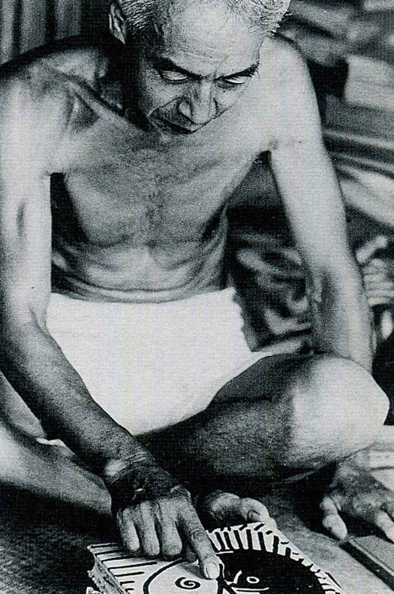
幼い頃から南画の英才教育を受け、いつの間にか『天才』の自負を抱きながら成長した画家...田中一村。優秀な成績で最高学府の東京美術学校に入学したというのに、自分に南画を教えられる教授がいないという理由で2か月後には自ら退学してしまった。
しかし、販売会で彼の描いた南画が飛ぶように売れた、そんな幸福な時代も終わりかけていた。
南画の時代が去った事を自覚した一村は、やがて新たなカタチの日本画を模索し始める。しかし、それと同時にこれまでの支援者たちは瞬く間に彼の前から去っていくのだった。
その後、姉と二人で五人の家族を養わねばなくなった一村は、画家として大成したい一心でいくつかの美術展に挑戦する。しかし不合格を繰り返すだけだった。
その間、美術学校の同期生たちがどんどん出世していくのとは逆に、一村の心からは『天才』の自負がどんどんと消えていき、コンプレックスだけが巣食うようになっていった。一つは自分の絵に対する劣等感、そしてもう一つは女性への恐怖心だった。
そんな一村は５０歳にして自分の絵にすべてを賭ける思いで、当時、日本最南の島・奄美に渡る決心をする。ところが奄美に向かう彼の大きな旅行カバンの底には、なぜか一枚の裸婦画がしまい込んであった...
これは彼と同じように芸術家を夢見ながら夢を果たせず埋もれ続ける、全国の無数の『田中一村』たちへ勇気と希望を与える物語なのだ。
１私はこんなに有名になっている
姉さん、知っている？
私が亡くなった三回忌に奄美の有志たちが名瀬で遺作展を開いてくれたのだね。
地元の新聞が大きく採りあげた事もあって、連日たくさんの観衆が詰めかけたそうだ。
三日間で三千人を越す市民が押し寄せたと言うのだから...私の生前には予想もつかぬ事だった。
昭和五十九年、ＮＨＫ「日曜美術館」で「黒潮の画譜～異端の画家田中一村～」が全国放映されたという。
やはり電波メディアの影響は大きかったようだ。
私の生き方や晩年の渾身作が、人々の圧倒的な共感や感動を呼んだのだね。
その感動の嵐はまたたく間に全国に広がり、私の作品集が出版され、私の展覧会が全国を巡り、あげくは私の映画まで作られた。
今では奄美に立派な記念美術館まで作られているというではないか。
ところで、生前の私は世俗の栄達には無関心な画家だったという人がいる。
だけど姉さんも知っての通り、私は絶えず世に出ようとがむしゃらだった。
母さんも姉さんも私を必死に応援してくれたし、私も母さんや姉さんの期待に応えようと必死だった。
東京美術学校を中退はしたが、あの同級生たちを必ず見返してやるぞと執念だった。
だが、結局、生前そんな私の夢は果たせなかった。
しかし今、私はこんなにも有名になっている。成功を成し遂げたのだよ。
でもこの成功は、私がこの世に生きていた時に実現したかった。
いや、何としてでも姉さんが生きていた時に実現したかった。
振り返ってみると、私の人生は何だったのだろうね。
そして姉さん、あなたの人生はいったい何だったのだろうね。
今さら悔いても仕方のない事ばかりだけれど、今日はゆっくり私の話を聞いて欲しいのだ。もしかしたら、姉さんに内緒の話だってあるかも知れない。
でも姉さん...姉さんはきっとこんな私の繰り言を聞いてくれるよね。
２私は『天才』だった...
私たちは現在の栃木市に生まれた。父は稲村という雅号を持つ彫刻家だった。
本人は芸術家らしく生きたつもりかも知れないけれど、いつも酒と放蕩に身をやつし、晩年はそのツケで病気になった。
母はとても気性の激しい、そしてプライドの高い人だった。
そんな母は私たちに、いや、男の私に自分の夢を賭けたかったようだ。
母は私の『天才』を信じて疑わなかったのだから...。
私たちがまだ小さかった頃、栃木から東京に引っ越した。
母は私を成功させるためには何が何でも中央で勝負させたいと考えていたようだ。
おかげで私は南画や水墨や漢文の先生に付いて、日々その習得にあけくれた。
徹底した英才教育だった。
七歳の時には全国児童画展で天皇賞まで受賞し、嬉しさのあまり母は息子の『天才』をあちこちに吹聴して回ったものだった。
私は背がすらっと高くて学校の成績はいつもトップ。
しかも子供の頃から漢詩ばかり愛唱していたから、若い私は超俗の詩人でもあるかのような錯覚の中を生きていた。
私は南画の訓練が出来ていたから、若い頃から絵の販売会をあちこちで開く事が出来た。私はすでにすばやい筆さばきで絵が描け、そしてそれらの絵は飛ぶように売れた。
当時はまだ財界や知識人の間に南画や水墨画の幅広い愛好者がいたからだ。
だから東京美術学校に入学した時には、私はすでに南画の大家のつもりだった。
しかし入学三ヶ月後には自ら退学届を出した。
じっさい美術学校には私に南画を教えられるだけの教授はいなかった。
同級生たちの絵にいたっては軽蔑さえもした。
確かに私の南画の技術はすでに卓越したものだったと思う。
私は『天才』を鼻に吹かせる...声の大きな傲慢男だったのだ。
そして十九歳の私はすでに全国美術家名鑑に名前が載っていた。
十代で名鑑に名前が載るなんて考えられる？
本当は父が陰でお金を積んでいたのだけれど...いつの間にか、私は『天才』という大きな思い違いを生きていたのだ。
しかし、時代は急速に変化していた。
美術の世界にも新しい波が次から次へと押し寄せていた。
やがて知識人たちの多くは新しい芸術を求めるようになり、すでに南画や水墨画は時代遅れになっていたのだ。
私は自分の南画を変革する必要に迫られた。
ある日、私は支援者たちの前でこれまでの絵との決別宣言をした。
これからは現実をありのままに描く「写実の南画」という主張だった。
その決意を実際のカタチにした絵が「の薹とめだかの図」である。
川の土手ではあちこちにフキノトウが芽を出し、メダカが泳ぐ川には枯れ蓮が突き出ているという...実際に私が見たままを描いた絵だった。
すると支援者たちは見る間にいなくなった。私は南画ではもう食えなくなったのだ。
３入選したのだけれど
戦時中の話はしたくもない。軍需工場に行かされ過労で結核になり、二年間の病床生活を送らされただけだ。
けれど不思議なことに、戦争が終わると私の胸の患いは嘘のように癒えていた。
戦後、世間では川端龍子の絵が脚光を浴びていた。
当初、洋画で写生を学んだ彼はやがて日本画へと転身し、日本画の革新を目指していた。
絵をこれまでの文化人や知識階級など一部の人たちを対象にするものから、一般大衆の誰もが美術館で自由に見ることが出来る「会場芸術」を掲げて精力的に活動していた。
日本画に線そのものを復活させ、描きたいものだけを画面いっぱい大胆に描く「健剛なる芸術」という主張でもあった。
実際に彼の絵はスケール感があって迫力満点だったのだ。
その龍子の主宰する青龍会から私に声がかかった。
会の幹部の一人Tさんが私に目をかけてくれたのだ。
彼は私に最高級の緑青をプレゼントし、「入選するための絵」の手ほどきを事細かくやってくれたのである。
私は彼のアドバイスに従う事にした。
実のところ、私の絵はすでに出来上がっていた。
画面下に竹笹を入念に細かく描き、その背後に大きなヤマボウシを描いた...そんな絵だった。
しかしその絵を見たTさんは竹笹をすべて消去するように私に指導した。
すでに細かく描いてあった竹笹すべてを、私はTさんの言葉通りに消し去った。
そして画面全体にヤマボウシの葉だけを緑青で描き、葉々の間には白い花々を胡粉で散らばらせた。
画面全体をヤマボウシの葉と花で描き切ることが彼のアドバイスだった。
確かにその『白い花』は見事入選だった。私に幸運の一筋が見え出したのだ。
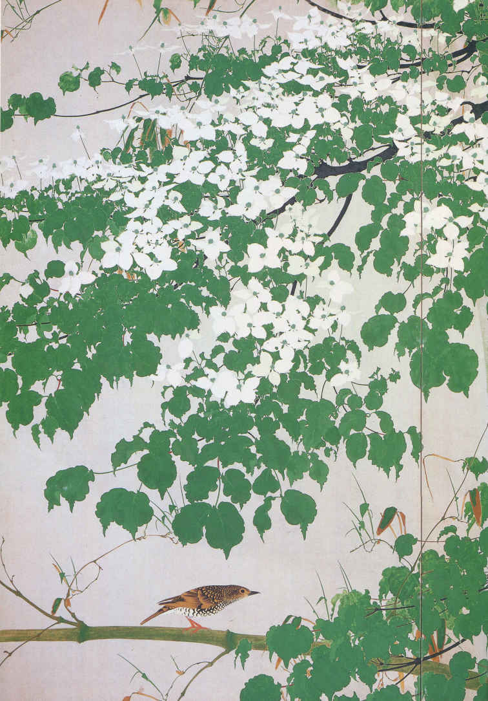
ただ展覧会が終わって時間が経てば経つほど、これは自分には納得のいかないことのように思えてきた。
私は本当のところは、竹笹の混み合った群れから立ち上がるヤマボウシの木を描きたかったはずなのだ。
しかし、自分の考えすべてを放棄してTさんの指示通りに描いた。
確かに入選はしたが、もう自分の絵ではなかった。
しばらくすると、これまでの自分の画家人生すべてが否定されたような気までしてきた。
私は恩人のTさんの元へお礼にさえ行かないことを決めたのだ。
そしてこれはまたしても私の『天才』のプライドが幸運を握りつぶした瞬間だった。
４なぜ『秋晴れ』が落選ですか？
翌年の青龍展...今度こそは「私の絵」で勝負しようと覚悟を決めた。
金屏風に茅葺き屋根の農家を描く...青龍展の主張にも合致する、意表をついた戦略だと、我ながら得意満面だった。
画面中央に黒いシルエットのケヤキを描き、その枝には十本余りの小さな大根をぶら下げ、背後には棕櫚の木、左下には数羽の軍鶏を描き入れた。
この『秋晴れ』は私が渾身を込めた大傑作だと確信した。...私は自信満々だった。
そして時間が余ったのでさらにもう一点の小品も描いてみた。
私は青龍展にこの二点を出品したのだ。
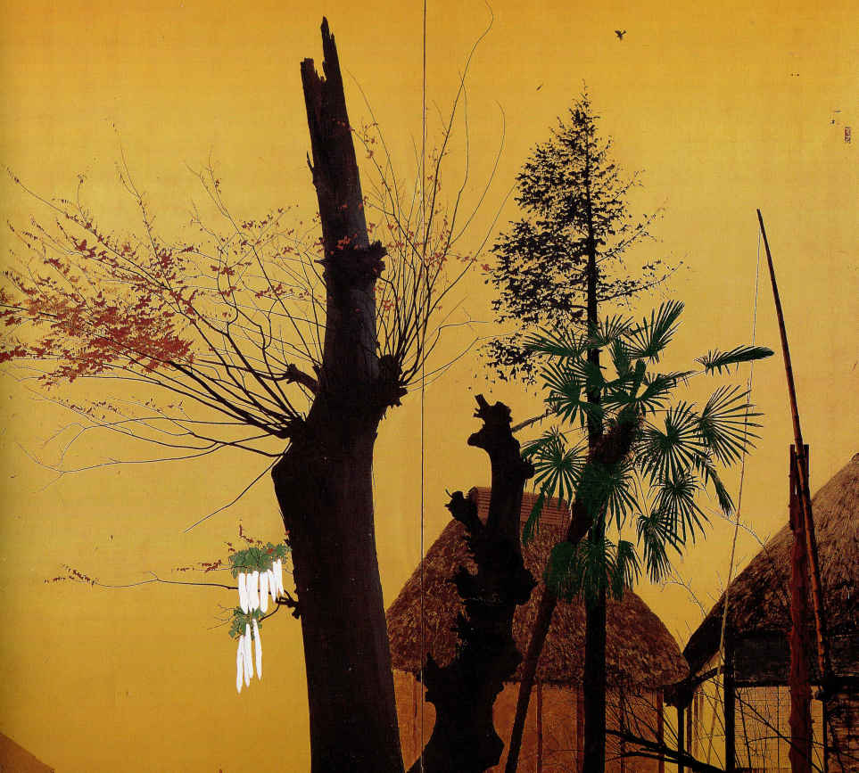
私はさっそく青龍展の審査会場に出かけた。
会場では龍子が機械的と思われる速さで「入選」「不合格」と判断を下しながら、並べられたたくさんの絵の前を進んでいた。
やがて龍子が私の絵の前にやって来た。すると、突然、彼の足が止まった。
私の絵を注目してくれているのでは...一瞬、私の心は喜びに打ち震えた。
しかし龍子はちょっと考えあぐんでから、私の小品の方を指さして「入選」と言っただけだった。
そしてそのまま隣の絵の方に行ってしまった。
弟子たちや取り巻きの多くの人たちが龍子の後を追いかけた。
私の前には大きな金屏風の作品『秋晴れ』と、横に添えられるように置かれた小品があった。
そして小品の右上に貼られた「入選」の白い紙がゆらゆら揺れていた。
私は自分の二つの絵の前で呆然と立ちすくんだ。
絶対の自信があった大作品の方が落ちて、片手間に描いた小作品の方が入選とは、私にはどうしても納得がいかなかった。
やがて私の中に言いようのない怒りが込み上げてきた。
そして、そこに居ても立ってもおられない心境になった。
私は龍子が選考を終え休憩しているはずの控室まで押し掛けた。
彼は多くの弟子たちに囲まれながら、湯呑の酒を手にしてくつろいでいるところだった。私は龍子の前に立った。そして言った。
「なぜ大きな金屏風の『秋晴れ』の方が落ちて、あんな小さい絵が入選ですか？あれは片手間に描いただけなのですよ。あなたの目は節穴なのですか？」
龍子は憮然とした顔になった。
いきなり自分に文句を吹きかけてきた、痩せた背の高い男をじっと見つめた。
「いったい突然に何事なのだね？ ああ...思い出したよ。あの絵の事か？」
龍子のそんな言葉に差しはさむように、私はさらに付け加えた。
「だいたい酒を飲みながら他人の作品を見るなんて失礼じゃありませんか？」
門下生たちが慌てて私の身体を制した。
やがて龍子は落ち着き払った態度で、こう答えた。
「小さい絵の方がまだ『動き』が感じられるからだよ...」
私は納得がいかないままその場を引き下がらざるを得なかった。
結局、こんな振舞いのために、私はせっかく支援してくれたはずの青龍会とも絶縁してし
まう事になった。
またしても私の『天才』が幸運を握りつぶした瞬間だった。
でも後で私が冷静になってみると、龍子の方がやはり正解だった気がしてきた。
金箔のバックに農村の取り合わせはどう見ても奇をてらっただけの不自然なものに過ぎなかったからだ。
５『天才』の本当の犠牲者は？
ところで、気がつくと東京美術学校の同級生たちの誰もが美術界の階段を着実に昇り続けていた。
逆に、私の方は中央画壇に出ようと焦りながら、いつもこのように他人と衝突を繰り返すばかりだった。
しかし、よくよく考えてみると、私の『天才』の本当の犠牲者は私よりも姉さんの方だったのだ。
姉さんは子供のころから芸術の才能があり、若くして琴の指弾にもなった。
整った目鼻立ちに気品があり、しかもその知的な面立ちは「麹町の小町」とも評判されるくらいだった。
縁談の話も多かったはずだけれど、プライドの高い母はどれも「娘には合わない」と言って断った。
そうこうしているうちに、その母が亡くなり父はすでに病気が重く仕事も出来なくなっていた。
いつの間にか、私と姉さんは病気の父、祖母、弟を抱えて計五人の家族を養わねばならなくなったのだ。
私は色々な小物細工の仕事をし、姉さんは琴を教えながら着物の仕立てをした。
そんな時、姉さんに縁談の話が持ち上がった。
これまでいくつかの縁談を断り続けてきた姉さんもすでに二十七歳。
適齢期を過ぎて最後の結婚話かも知れない。
さすがに今度は姉さんも真剣に結婚を考えていたようだ。
しかし姉さんがお嫁に行けば、私はこのまま残された家族を養う生活に押しつぶされてしまうだろう...またしても私の『天才』が私を傲慢にした。
「姉さん、お願いだからこの縁談は諦めてくれないか。今、姉さんに出て行かれると、ぼくは肝心の絵が描けなくなってしまう」
姉さんの結婚は、今度は母親の手ではなく、私の手で握りつぶされた。
姉さんは無理やり『天才』の犠牲にさせられたのだった。
やがて病気の父も祖母も弟も亡くなり、姉さんと私の二人だけになった。
私たちは東京から引っ越し千葉に小さな家を作った。
自給自足の暮らしを始めることになったのだ。
毎朝二人で農作業をした後は、姉さんは家の仕事、私はアトリエに籠った。
いつだったか、全くお金も無くなり二人でスイトンの汁まで啜って飢えを凌いだ事もあった。そんな窮乏生活だった。
けれど私には愉しい日々に思えた。いつしか姉さんが私の心の支えになっていたからだ。
私は新しい絵のアイデアが浮かんだ時も、絵の構図に迷った時も必ず姉さんに相談した。どんな時でも姉さんは素晴らしいアドバイザーだった。
時には夜遅くまで二人で芸術論を戦わせたりした。
私たちは誰の目にもすでに仲の良い夫婦だったのだ。
６私にとって女性とは？
ところで、私にとって女性とは一体何だったのだろう？
私は物心の付いたころからずっと意識的に女性を遠ざけてきた気がする。
それは母から「お前は立派な芸術家にならなきゃならないのだから、決してお父さんのように、女で道を間違えるような事だけはあってならないよ」といつも言い含められて育ったからかも知れない。
実際、私は親父の放蕩の人生とその末期を見続けた。
父は当時の彫刻界の大御所・加納鉄哉に師事したいと言って上京したはずなのに、その夢も叶わなかったようだ。
東京では根付やお盆制作のような小物細工の仕事をするしかなかったのだ。
それでも父は粋がって「酒と女遊びは芸術家の勲章だ」と言って、昼間から酒を飲んでいたりした。
そして夜は毎晩のように歓楽街に繰り出した。
時には家に帰ってこないこともあった。
私はある夜、歓楽街の路上を若い女とふらふら歩いている父親を見つけた事がある。
気づかれないように後ろを付けていくと、二つの影は飲み屋街の小路の奥へと消えてしまった。
そのうちに父はアルコール肝炎を患うようになり、毎日のように腹痛と下痢で、夜になると発熱を繰り返すようになった。
やがて顔は土色に変色し、一日中、布団の中で寝たきりの状態になったのだ。
母はもうそんな父には愛想をつかしていた。
唯一の希望は私が画家として大成することだけだった。
私は父のようには決してなるまいと、女性を避け続けたのかもしれない。
しかし、そうしているうちに、私は酒も飲まなければ、女性にも近づかない野暮な朴念仁になってしまったのだ。
でも、本当の事を言えば、私は女性というものが苦手で、女性と話をすることさえ苦痛だった。
女性に近づく事が怖かっただけなのだ。
もちろん姉さんは例外だった。
いつしか姉さんだけがこの世で唯一の女性と思えていたのかも知れない。
私にはこの世に姉さん以上の女なんて考えられなくなっていたのだ。
７落選が続くうちに...
昭和二十八年、二十九年と立て続けに私は日展に落ちた。
その後、絶対の自信作と自負した作品までも落選だった。
展覧会の審査員には私が中退したあの美術学校の同級生たちが入っていた。
「きっとあいつらが私を落としたに違いない。あいつらに一体何が分かるものか！」
私は憤慨した。しかし落選はやっぱり落選だった。
やがて落選が続くうちに、自分の絵がそれほど優れたものでもないように思えてきた。
そして描けば描くほど、自信が無くなっていくのだった。
ある日、私は発売されたばかりの川端龍子の画集を買った。
画集に掲載されている絵を見てみると、確かに龍子のデッサンは動きがあってダイナミックで自由奔放だった。
私には考えられないような創意やオリジナルの想像力に満ちていた。
私はまたもや絶望した。私は龍子に比べるといつだって形にのっとった描き方しかできない。
生真面目に描くだけだから、平面的な博物画に陥ってしまう。
私には自由な想像力が欠けているのだ。
私は自分でもどうしていいか分からない。
自分の絵が見つからなくなったのだ。
一体これまでの私の人生は何だったのだろう？
ただ『天才』というまぼろしに惑わされ続けてきただけなのだろうか。
私は『天才』でも何でもない...ただ几帳面に描く凡庸な絵描きに過ぎないのではないか。
私は龍子の画集を見ながら、青龍展の審査会場での彼の言葉を思い出した。
「小さい絵の方がまだ『動き』があるからだよ...」
龍子にあって私に足りないもの。それは動きのあるデッサン力ではなかろうか。
私はさっそく部屋の中に様々な小鳥を飼い、庭にはシャチを放し飼いにした。
そうして鳥たちのスケッチを毎日描くことにしたのである。
特にシャチの生き生きした動きをデッサンに留めようと、目を凝らして繰り返し鉛筆で描き続けた。
しかし、結局、シャチは自分の思うような生き生きとした形には描けなかった。
私の描くデッサンはやはりどこか生硬で動きの少ないものになってしまうのだった。
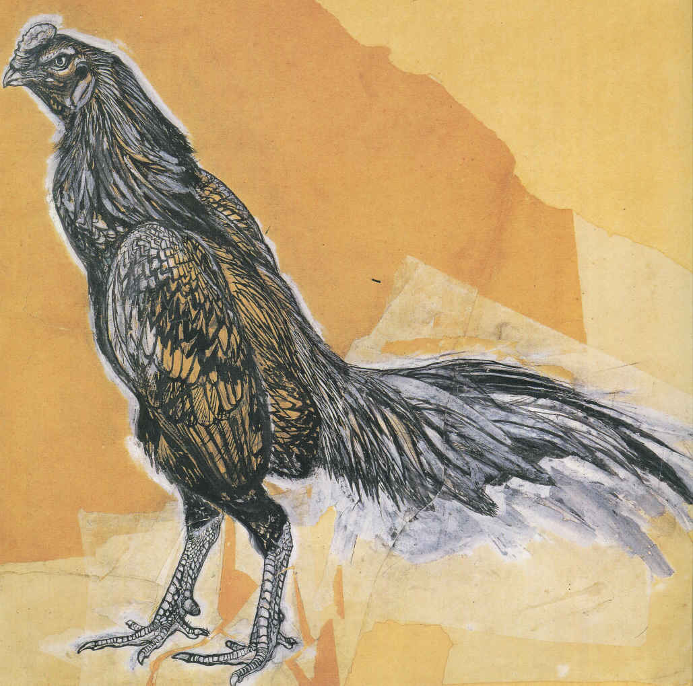
動きあるデッサンが苦手...しかし、それよりもっと問題なのは人間を描くのが苦手であることだった。
私はある日、一台のカメラを買った。
高価な買い物だったが無理して買ってみると、細部まで克明に写生するにはこんな便利なものはなかった。
さっそく近所の千葉寺辺りの建物や木々や草花や生き物などを撮影して回った。
家の庭で動き回るシャチを頻繁に撮り、現像、焼き付けも自ら行なった。
そしてそれらの写真をもとにして、より緻密で繊細な写生を繰り返した。
鉛筆による写生画が山のように溜まっていった。
しかしこのカメラで一番撮りたかったのは本当のところ人間だった。
だが、町の子供たちを恐る恐る何度か撮ることは出来たが、大人たちにカメラを向けるのはどうしても出来なかった。
特に女性にカメラを向けるなど私にはとうてい無理なのだ。
結局、カメラの最大の被写体は姉さんという事になった。
姉さんこそが私の撮る唯一の人物写真で、私は自分の風景画の中にこっそり姉さんをモデルにした人物を紛れ込ませたりしたのだった。
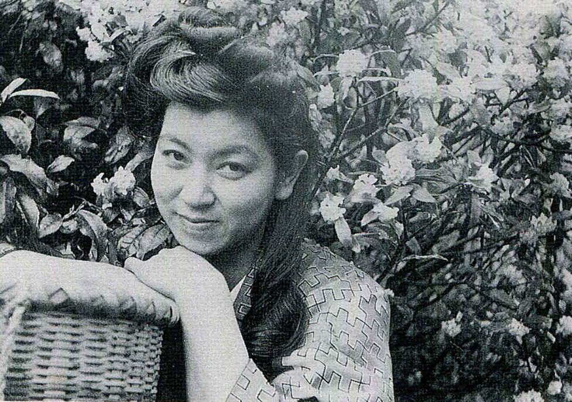
８ヌードデッサンの中で
いつだったろうか、ある日...姉さんは妙に緊張した声で私にこう言った。
「孝さん、お願いしたいことがあるの。聞いてくれるかしら...」
「私ももうお嫁に行くことはなくなったし...このまま歳だけとっていくのよね。孝さんは随分私の写真を撮ってくれたけれど、でも写真はやっぱり絵なんかではないわ。私は生身の自分を写真じゃなくて絵で描いて欲しい気がするの。だから記念に私を描いて欲しいのよ」
「ああ、それは良いことだね。よくよく考えてみると、私は姉さんをこれまでに描いたことはなかったのだから...」
「でも、孝さん、これはちょっと違った...ヘンなお願いなのよ」
「えっ？」
「孝さんはきっと驚くことだろうけれど、実は、わたし...わたし...私は私のヌードを描いて欲しいのよ」
「えっ！ それは？」
「孝さんはいつも鳥や風景ばかりスケッチしているけれど、たまには人間のヌードデッサンもいいと思うわ。私ももっと孝さんの絵のお役に立ちたいのよ...だから、これってどうかしらと思ってね...？」
私はすぐには返事が出来なかった。
私は風景画の中でいつも姉さんのイメージを思い浮かべながら、人物のカタチを造形してきたが、でもヌードとなると話は別だった。
姉さんは軽いハズミで言ったのかも知れないが、私には大変なショックだった。
姉さんの裸を描くなんて想像すら出来なかった。
いや怖くてとても描けない気がしたからだ。
そう言えば、私は南画の訓練ばかりやって来て、ヌードデッサンというものは美術学校で二～三度ばかりやっただけだった。
私はまた川端龍子の画集を引っ張り出してきた。
果たして龍子がどんな女性のヌードを描いているのだろうか、見てみたかったのである。
昭和8年に描いた『山葡萄』や、昭和23年に描いた『刺青』では大胆に横たわった裸婦があった。
太い線で縁取られ大まかだけれど、胴体と腕と脚が動いているダイナミックな絵だった。
しかし一番驚かされたのは、『沼の饗宴』という、河童の群れを描いている絵だった。
河童のカタチを借りてはいるが、自由な姿態で泳ぐ裸体の群れはどれも自由闊達な形で動きのあるヌードデッサンだった。
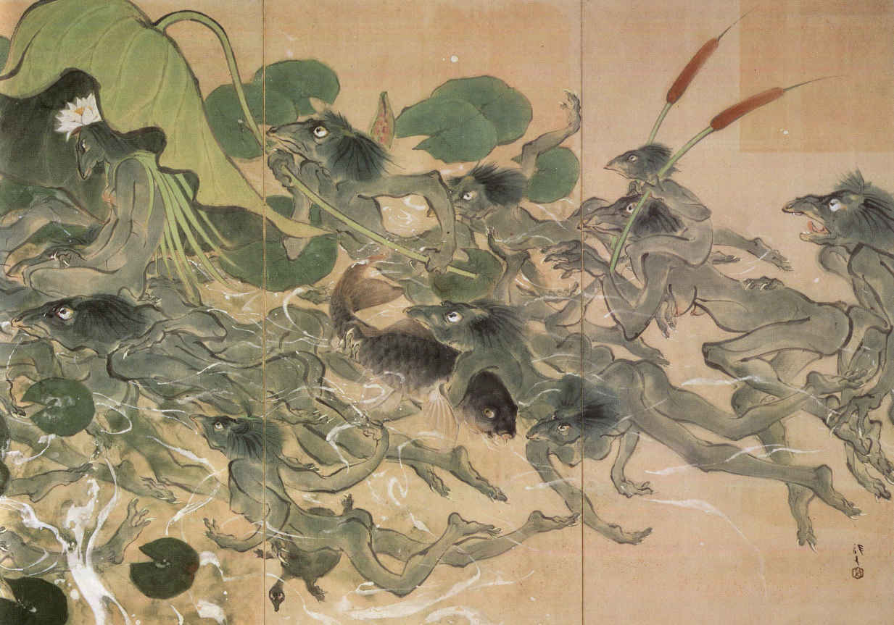
私にはこのような自由な人体デッサンは絶対描けないと思った。
果たして私に姉さんのヌードなど描けるのだろうか...不安になるばかりだった。
でも姉さんは私の絵画修業の材料になりたいとまで言ってくれる...その気持ちには、やっぱり画家としては応えねばならないと思った。
そうしてどうせ描くのなら永遠に美しい姉さんを描くしかないと私は心に深く念じたのだった。
「姉さん、良いよ。思いきりきれいな姉さんを描くつもりだよ」
すると、目の前の姉さんがいつになく晴れやかな顔をしているのに驚いた。
私は姉さんの中に初めて自分には分らない別な存在を見つけて心が動揺したのだった。
しかし、姉さんのヌードデッサンともなると、果たしてどんなポーズが良いのか私は迷いに迷った。
正面を向いた立ちポーズは考えられなかったし、寝転んだポーズももっての外だった。
散々考えたあげく決めたポーズは、両脚を揃えて前に出し上半身だけを起こしている姿だった。
そして姉さんの横顔を斜め前からスケッチすることに決めた。
これなら長時間同じポーズを取っても楽だろうし、何より姉さんが羞恥心を感じなくてすむ最も自然なポーズのように思えたからである。
「孝さーん、約束通り思いきりきれいに描いてくれなくちゃ困るわよ」
隣の部屋でそんな声がはずんでいたかと思うと、もう目の前に胸元から下をタオルで包まった姉さんが立っていた。
むき出しの白い丸みのある両肩は姉さんをもう別世界の人間に変えていた。
やがて姉さんは私の指示するように上半身を起こして床に敷かれたマットの上に座り、やがて両脚を揃えながら真っすぐ床の上に伸ばした。
右腕は上半身を支えるように、床に垂直に突き立て、左腕は自然な形で左脚の腿の上に置かれた。
私は木炭を持って姉さんの頭や上半身のラインをまず描いた。
そしてそのまま木炭の線を両脚の方へと引っ張っていき、全体のヴォリュームを作った。腕や首の付け根の調子を整えようと木炭を動かすと、右肩の下に小さな黒子が見えた。さらに胸のふくらみへと線を進めようとした時、急に私の手が止まってしまった。
乳房は少し垂れてはいるが、乳首の辺りが妙に張りがある。
姉さんの肉体が突然、女の表情を持って迫ってきたのだ。
「これはいけない...」
この後、私のデッサンは一向に進まなくなってしまった。
何度もイレーザーで消しては描き直し、描き直してはイレーザーで消した。
そして何とか二枚を描きあげることが出来た。
幸い姉さんには私の心の動揺は悟られなかったようだ。
ようやく描き終えた時、私には得体の知れない疲労が押し寄せていた。
姉さんがあまりにも私の近い所に居たのだ。
私はデッサンの一枚を姉さんに手渡した。
「描けたよ。姉さん、これでいいだろうか」
「私ってこんな身体なのね。思ったよりグラマーなのかしら...これで、私も孝さんの仕事にいくらかでもお役に立てた気がするわ...」
姉さんは無邪気に笑ったが、満足そうだった。
わたしはほっと胸をなでおろして、もう一枚のデッサンを画版の間に挟み入れた。
この夜、私は夢を見た。ある女の白い肉体が自分をどこまでも追いかけて来る夢だった。その肉体が私の上に負いかぶさり私が足掻き苦しんでいるところで目が覚めた。
身体じゅうひどい汗だった。
私はやっぱり女性を描けない...いや、人間を描けない...どのようにあがいても、とても龍子やロートレックのような人物画は私には無理なのだ。
しかし姉さんの私に対する期待は変わらない。
いや、姉さんの方だって私の『天才』を信じなければならないのだ。
でなければ、姉さんは自分の人生の意味さえ分からなくなってしまうのだから...
そして私は姉さんの前では、何としてでも『天才』であり続けなければならないのだ...
でもそのように考えれば考えるほど、私の心は息苦しくなった。
やっぱり、私は姉さんから離れなければならないのかもしれない。
９絵の題材は南にある！
ところで、私が姉さんの期待に応えられるように、絵で大成するにはどうすればよいのだろうか？
すでに凡庸な才能になってしまった私に一体何ができるのだろうか？
もう一度、自分を見つめ直すしかなさそうだ...
果たして私に何があるというのだろう？
そうだ...、私には真面目さと精緻に追求する執拗な忍耐力があるではないか。
やっぱり徹底的に克明な写実をするしかない...私はこれで勝負するしかないのだ。
とことん画面を隈なく緻密に描きつくし、色彩とカタチを無限に散りばめる事なのだ。
それでは、色彩とカタチが豊かに満ち溢れているような場所はどこにあるだろうか？
ひょっとしたらそれは熱帯ではなかろうか。
熱帯こそ色とカタチが豊饒に爆発している楽園ではなかろうか。
ただ、熱帯には容易に行けそうもない。
しかし日本の南国だったら行けるかも知れない。
それで私は叔父さんにそんな話を持ちかけてみた。
すると幸いにも、叔父さんは私に旅行の資金を出してくれると言ってくれたのである。
こうして私は南に向けて、さっそくスケッチの旅に出かけることになった。
船舶と列車を乗り継いで紀州、四国、九州へと一人旅を続けた。
確かに南へ行けば行くほど、植物は繁茂し花々も葉も濃厚な原色へと変わっていく。
私の心は躍った。
宮崎の青島に到着した時、紺碧の海岸はどこまでもビロウ樹の列だった。
箒のような濃緑の葉が風に揺れ、そのシルエットが私の頭の中でいつまでも舞い続けた。
ビロウ樹、ソテツ、サボテン...私はいつしか南国の植物に魅せられ、夢中でスケッチしていたのである。
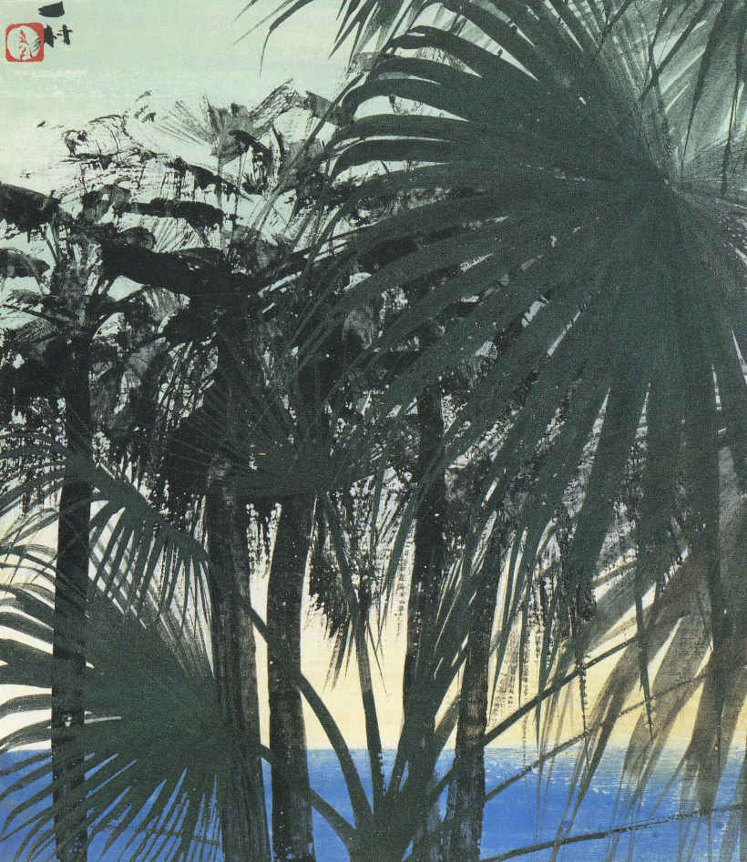
こうして私は何冊かのスケッチ帖を抱えて南九州旅行から帰ったのである。
旅行から戻ると、私の頭の中のイメージ世界は色彩とカタチが乱舞する別世界に一変していた。
私の心は高揚していた。そして今度はさらに南の亜熱帯の島を目指したくなった。
いや移住しようと考え始めたのである。
当時、奄美は日本最南端の島だった。間違いなく亜熱帯の島なのだ。
そこには自分の絵を根底から変えてくれる何かがあるはずだ。
きっとむせ返るような原色の色彩や奇抜なカタチをした、木々や草花や鳥や虫たちが私を迎えてくれるのではなかろうか。
私は直感した。
亜熱帯の奄美の自然なら私の絵も新しい画期的な日本画へと変身できるのでは...
しばらく経つと、私は決意を固めていた。
芸術の再出発を奄美に賭けようと決心したのである。
旅費を調達するには千葉の家を売るしかなかった。私は姉さんに言った。
「姉さん、このまま千葉に居続けても先が見込めないような気がする。生活そのものを変えなくちゃ新しい絵なんて生まれない。ぼくは自分の日本画を亜熱帯の植物や鳥などに賭けようと思うのだ。姉さん、ぼくは何としてでも南国の奄美に行きたい。あそこだったら、きっと画期的な絵に挑戦できるはずだ」
「でも奄美に移住する肝心のお金がない...姉さん、この家を売っても良いだろうか」
「孝さん、私はあなたの芸術のためなら何だって協力してきたわ。奄美で新しい絵が描けるのならそうしなさいよ。家を売ったお金は全部あなたの絵のために使っていいのよ」
姉さんは笑顔で答えた。
私が奄美へ旅立つ日、姉さんが空港まで見送りに来てくれた。
ターミナルで分かれる際には、姉さんはちぎれんばかりにいつまでも手を振っていた。
そんな姉さんを見つめながら、私の目には思わず涙が溢れた。
実は私には姉さんに隠した秘密があったのである。
その大きな旅行カバンの底にはあのもう一つのデッサンが忍ばせてあったからだ。
１０挫折した一度目の「奄美」
私はこうして奄美に到着した。
永住して自分のすべてを賭けるという意気込みでやって来た奄美だった。
しかし、いざ住んでみると奄美はそんな甘い所ではなかった。
まずこんなに雨が多い所とは思わなかった。
いつもからっと抜けるような南国の真っ青な空を期待していたのに、ほとんど毎日決まったように雨が降って、その時、空はどんよりと灰色になるのだった。
湿気が多く部屋は絶えずカビに悩まされ続けた。
あばら家の中は蚊やハエやアブが飛び交い、蟻やムカデやナメクジまで侵入してきた。
自給自足を考えた畑は、毎日嫌になるほど雑草取りの繰り返しだった。
何とか生活していけると考えたのに、離島は何でも物価が高かった。
現実の奄美はそう易々と私を受け入れるような所ではなかったのだ。
それから、私は奄美の人々の生活の中になかなか溶け込む事が出来なかった。
頻繁に行われる住民たちの祭りごとや行事では、人々は酒を飲んで三味線に合わせながら狂ったように歌い踊るのが常だった。
酒も飲めなければ付き合いも苦手な私は、地元のそんな風習にはどうしても加わることが出来なかった。
私はいつまでも外来者のままだったのだ。
おまけに私はなかなか新しい絵が描けなかった。
奄美の自然を南画のタッチで描くのはたやすい。
千葉で決意したように、徹底的に克明な写実にこだわるなら訳がない。
写真やスケッチを元に緻密に描きつくせば良い事なのだ。
でもそれらは旅行者が見る、ただの風景画でしかない。
私は奄美の内部から奄美そのものを発見する...そんな絵を描きたかったはずだ。
ところが、私はハブが怖くてうっそうと藪の茂る森の奥まではどうしても踏み込むことが出来なかった。
あんなにも固い覚悟でやって来たはずなのに、私はいともたやすく決意を翻すことになった。
何と二年で奄美に挫折し、すごすごと千葉に舞い戻ったのだった。
私はこんなにも簡単に姉さんを裏切ることになったのである。
..............................
千葉に戻った私に叔父さんが縁談の話を持ってきた。
教育委員会という就職先まで用意してくれた。
教育委員会で毎日仕事をしながら、休日には趣味として好きな絵を描く...私の心にそんな「幸福な人生」が思い描かれた。
私にはそれくらいの平穏な人生の方が合っているようにも思えた。
そんな時だった。台所の方から姉さんの声が聞こえてきた。
「へーえ！孝さんが結婚するの。そんなのだったら私も結婚を考えなきゃいけないわね。私だって...私だって幸せになる権利くらいはあるものね！」
その時、姉さんのヒステリックな「私だって...」という言葉が私の胸に鋭く突き刺さった。私の身体全体にゾクッと悪寒が走った。
考えてみれば、姉さんはどんな思いで日々私を支えてきたのだろう？
私の芸術の達成を願っての事ではなかったろうか？
私は自分の事しか考えていなかったのだ...私は姉さんに甘えていただけなのだ。
私は一晩中考えた結果、教育委員会の仕事も縁談の話もきっぱり断ることにした。
そして再び奄美に戻ることに決めたのだった。
今度こそは姉さんを裏切るまいと思った。
私が千葉を去る日、姉さんはこう言った。
「私が信じ続けてきた孝さんがただのつまらぬ男だったとだけは思いたくないの...」
１１再び「奄美」に行く...
私は再び、奄美に戻って来た。今度こそは奄美に骨を埋める覚悟だった。
私はまたあのあばら家に住むことになった。すでに五十歳を越えていた。
でも、姉さんの思いのためにも...私はやるしかないのだ。
しかし、私は果たしてどんな絵で勝負すれば良いのだろうか。
私には肝心の想像力が欠けている。オリジナルな線が引けない...凡庸なこの私に出来ることとはいったい何なのだろうか？
私は姉さんが描かれた、あのヌードデッサンを引っ張り出していた。
そしてデッサンの姉さんの顔を何時までもじっと見つめ続けた。
すると、デッサンの中からこんな声が聞こえてきたのだ。
「あなたは天才なのよ。ずっと天才だったのだから...」
そうだ。私は幼い時からずっと『天才』だったではないか。
私は幼い時から絶えず水墨と南画の訓練を積んできた日本画家なのだ。根っからの花鳥画家なのだ。
確かに私は博物画的な写生絵しか描けない。
それなら写生をとことん追求するしかない...克明に写生するしかない...そう心に誓って千葉を出発したはずなのだ。
水墨と南画のあらゆる手法を用いて、画面をどこまでも徹底的に繊細に丹念に隈なく描き尽くすと決めたではなかったのか？
そして、そこに色彩とカタチを無限に散りばめる事を決意したではなかったのか？
そこから更なるダイナミックな力を生み出すためには、絵の構成を工夫し、複雑な遠近感を作り出すことしかないのだ。
病弱な私に残された時間はどう見てもあと十年。おまけにお金はない。
五年間は働いて最後の勝負の資金を作らなければならない。
空いた時間は奄美の鳥や草花のスケッチに費やせばいい。
資金を貯めたら後の五年こそ絵にすべてを打ち込むのだ。
こうして私は奄美の大島紬工場の染色工として働き始めた。
そして休みの日には必ず森に野鳥や草花のスケッチに出かけることになった。
しかし、今度は一度目の奄美の時とは根本的に考え方が違っていた。
私は奄美の自然の中に入り込んで、奄美の内側から自然をスケッチする決意が出来ていたからだ。
私は森の奥深くにまで入っていった。
そして大きな樹木のコケの生えた根っこに腰かけて木々や草花や鳥たちをデッサンした。
周囲の人たちは「ハブも出るから危険ですよ」と言うのだが、私は以前とは違って全く怖くはなかった。
畏れ多くも私は奄美の自然の領域に足を踏み入れる決心をしたのである。
ハブを怖がるなんて、そもそも自然に対して失礼なのだ。
日没の日が暮れていく頃などに、森の中でじっと神経を集中させ、息をこらして樹木や花々をスケッチしていると、どこかでアカショウビンなどの鳥たちのせわしい鳴き声が聞こえたりする。
早朝、日が明けようとする頃には森の中に立ち込めた朝もやが、いっせいに外界の海の方へと流れ出してゆき、やがてゆっくりと消えてゆく。
そんな時、私は自然と一体化した心持ちで森の外を見つめている。
それは自分が深遠な神の領域にいるのだと感じる神々しい時間なのだ。
森の奥から遠くを望むと、決まって海と空のはざまに小さな立神岩が見えた。
島に伝わる伝説では、海の向こうの豊饒の国から渡って来た神様が真っ先に降り立つという、そんな神聖な岩だという。
奄美の森深くに入ることで私は初めて自然を畏れ敬うことがどういうことなのか知ったように思った。
私はこうして奄美の自然の内側から人里を見つめる視線を獲得したのだった。
私は奄美の奥からビロウやハマユウやガジュマルやソテツやクワズイモやアダンなどの樹木や草花を何百回も写生した。
アカヒゲやアカゲラやルリカケスやアカショウビンやトラフズクなどの鳥たちも百枚以上写生した。
アサキマダラやツマベニチョウやツマグロヒョウモンやイシガケチョウなどの蝶や蛾も限りなく写生した。
休日にはそんな写生を繰り返しながら、平日の私はいつも同じ着物姿で両脇に傘と風呂敷き包みの弁当を抱えて、家と紬工場の間を往き来した。
工場では染色工たちのおしゃべりや飲み会に付き合うこともなく、ただ黙々と仕事を続けるだけだった。
五年はあっという間だった。絵画制作に専念できるだけの資金もそれなりに貯まった。
いよいよ絵にすべてを賭ける時が来たのだ。
他人が何と言おうと自分は自分の絵で勝負するしかない...そんな決意だった。
１２勝負の絵を描く時が来た
私は最高級の日本画絵の具と畳大の絵絹十五枚を取り寄せた。
絵絹は湿気に弱いが、墨のぼかし、にじみの表現に合う。
何と言ったって顔料の発色が美しい。
私はこの十五枚に自分のすべてを注ぐ覚悟を決めていた。
すでにこの亜熱帯の草花や鳥たちを何百枚とスケッチしてきている。材料は揃っている。後は絵の組み立て方なのだ。メインになるものを大きく大胆に据えること。
そして色と形で絵全体のリズム、コントラストを作り出すこと。
しかし、薄塗りの日本画絵の具ではどうしても絵が平板になってしまう。
どうしたら絵に空間的な奥行きを持たせることが出来るのだろうか。
まずは一枚を描き始めることだ。
私は部屋いっぱいに蚊帳を吊るした。
蚊やコバエが落ちて来ないように蚊帳の中で絵を描くのだ。
床に横たえた絵絹の上に板を橋渡しした。
私はその横木に左手を置いて身体を支え、口に彩色筆をくわえ、右手に極細の面相筆を持った。上半身は裸だ。
私はまず全体に薄く青色を塗ってから、絵の大部分をダチュラの花と葉の輪郭線で埋めていった。
ラッパのような花びらと細い葉の輪郭線が何層にも重なり、右下には薄青い空間が残った。
汗が顔や肩から噴き出した。何度もタオルで顔や肩を拭いながら、私は毎日、それらの花びら一枚一枚に白胡粉を、葉の一枚一枚に緑青を、面相筆で薄く塗っていった。
そしてその薄塗りを何度も繰り返した。
するといつしか画面は白と緑が美しいコントラストで光り出した...最後に右下に一本の枝を描き、そこに一羽のアカショウビンを留まらせた。
なかなかの空間だ。私は満足した。
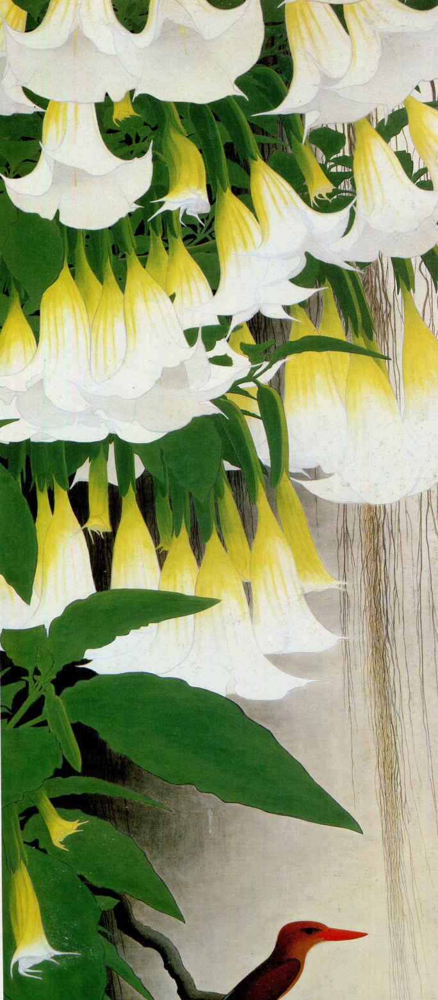
二枚目の絵絹は針のようなビロウ樹の葉だけで画面を埋め尽くすことにした。
水墨の濃淡を微妙に変化させながら、箒のようなグレイの葉の陰にまた別のグレイの葉を何層にも重ねていった。
そして一番奥にちらり空が覗かれるように工夫した。
巧妙な奥行き感が生まれた...森の内側からわずかに外界の海と明るい空を覗き見ることが出来るのである。
私はようやく奄美の住人になれたかも知れないと思った。私はさらに満足した。
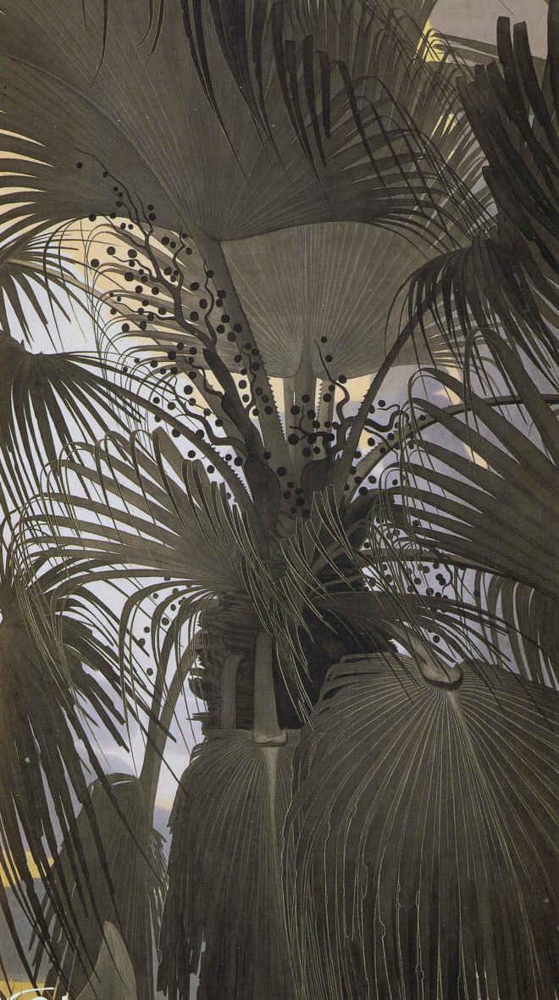
別な絵絹には巨大なガジュマルの樹木を画面いっぱいに描いた。
樹には毛細血管のような気根を幾層にも絡ませた。
その樹木の隅には一匹のトラフズクを描き、手前にはハマユウの白い花々を光らせた。
そして樹々の奥に海と空と立神岩が微かに覗けるようにした。
なかなかの出来映えのように私は思えた。
奄美の深淵な森の中から遠く外界を覗き見る...やっと私の空間作りが自分のものになった気がしたのだった。
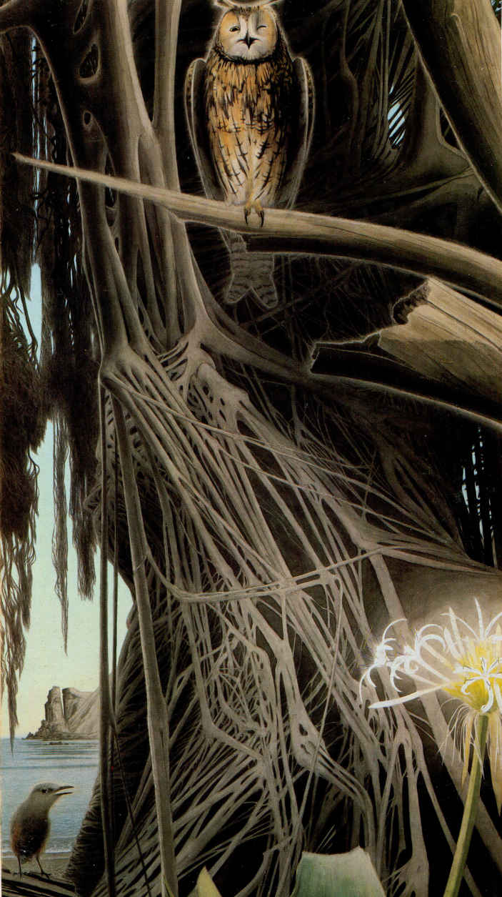
私の頭の中は亜熱帯の植物の色彩が乱舞した。
緻密に描けば描くほど、やがて世界は神秘を帯びてくる。
私は夢中に描き続けた。来る日も来る日もただひたすら描き続けた。
そんな時だった。姉さんの危篤の電報が届いた。脳溢血という。
電報を受け取った私は描きかけの絵もそのままに千葉の病院まで駆けつけた。
そしてその時初めて、姉さんが奉公先で悲惨な生活を送っていたことを知らされたのだった。
姉さんは昏睡状態だった。
ベッドの中で眠り続けるだけだった。
一週間位経った頃だろうか...姉さんの両方の眼が微かに開いた。
「姉さん、分かる？...」
と私が声をかけると、姉さんの口元からはウーという声が漏れた。
目尻からは大粒の涙がゆっくり流れた。
私は姉さんの手を固く握り締めて何度も何度も語りかけた。
しかし姉さんはもうこれ以上反応することはなかった。
来る日も来る日も姉さんの胸の上の布団だけが激しく上下し続けていた。
五月十六日、姉さんは意識を回復することなく旅立った。
「ぼくはとうとう姉さんを殺してしまったのだ」
私は号泣した。私は自分が甘えることのできるすべてを失ったのだ。
私は姉さんの骨壺と位牌を持って奄美に戻った。
私にはまだ使命が残っている。
今描き進めているシリーズの最後の二作を姉さんに捧げる使命なのだ。
１３姉さんに捧げる最期の二作
いよいよその二作となった。
一作目は亜熱帯のソテツとクワズイモをどこまでも濃密に生き物みたいに描く計算だ。
中央にソテツの巨大な雄花、最下部は雌花、それぞれを真黄色で描いた。
そこからはムカデのような葉の群れを右と左にうごめかせた。
絵の上半分はクワズイモの肉厚の大きな葉で埋め、その黄色いサヤからは真っ赤な実を乱舞させた。
そして暴れまわる葉や茎の奥には微かに望めるような海を描き、そこに小さな立神島の岩を描き加えた。
見ると絵には素晴らしい遠近感を持った空間が生まれていた。
私は満足し絵筆を置いた。
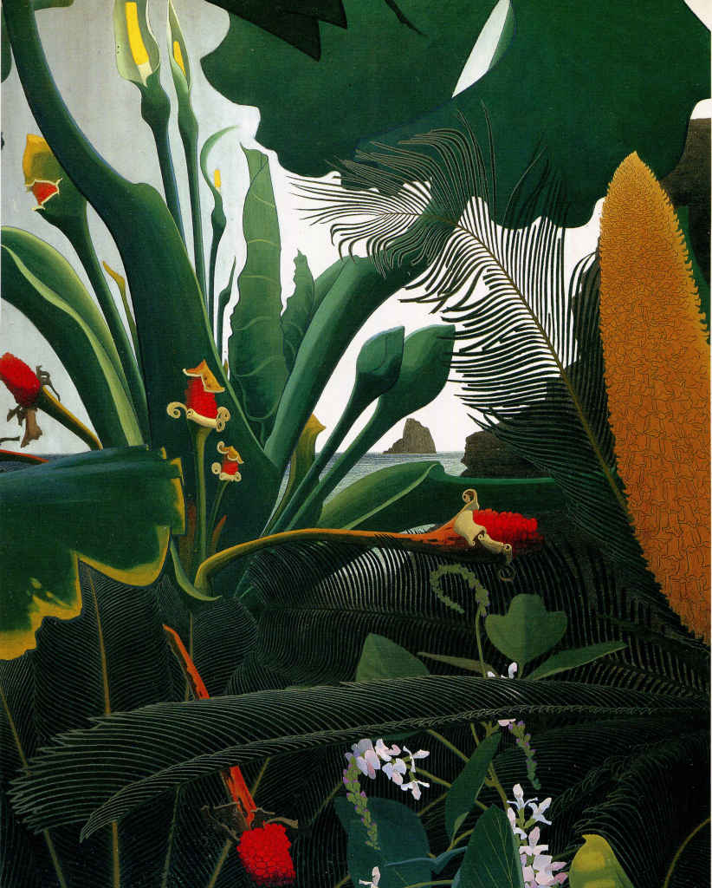
二作目はずばりアダンの樹だ。
やはり構図は空間的でなければならない。
まず真ん中に馬鹿でかい真黄色なアダンの実を描いた。
その実から左に奇妙にくねっていく幹には、尖った厚い葉を蜘蛛の足のように広げさせた。
後方の四分の三は夕方の空。空には不気味な雲を描き、裂け目から金色の光をこぼれさせた。
その下には無限に続く海原だ。
この海の描き方こそが私の勝負どころなのだ。
手前の砂浜から水平線の海の彼方まで、すべてを写真以上に細密に描くのだ。
私の面相筆の筆先が、砂浜の微細な砂利や小石の一つ一つを辿っていく。
陽を受けて白々輝く小波の一つ一つも、海上に浮き出た岩の岩肌までも、虫メガネを覗きながら執拗に描き込んでいく。
長年の染色仕事で目を使い過ぎたためだろうか...目がショボショボする。
肩がこる。激しい頭痛と眩暈に襲われる。
だが、私はなおも目を画面に近づけて描く。
ただひたすら緻密に描き続ける。
私の全身の血管が浮き上がっているような気がする。
血圧が上がる...だけど、どうすればよいというのだ。
血圧なんぞ気にしておられるものか。
やがて全身の痛みも薄れ、満ち足りた恍惚感で筆先だけが動いていた。
そうして私の身体全体が神にも近づいたように感じた時、私の最後の作品が完成していた。
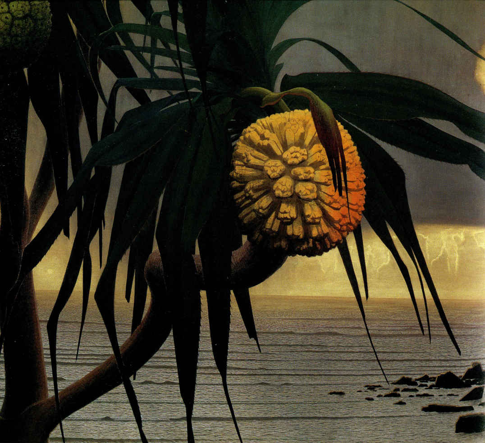
...姉さん、私は初めてあなたに胸を張って見せられる絵が出来た気がする。
子供の頃『天才』だったはずの私が、絵を描けば描くほど凡才へと変わっていき、その凡才が最後に自分の出来る最大限の仕事をやり遂げたのだ。
私にはもう思い残すことなど何もない。
姉さん、聞いている？
私は少しは『天才』になれたのだろうか？
..............................
九月十一日の夕方。私は四畳半の畳の上にまな板を置きキャベツを刻んでいた。
裏庭の鳥たちのさえずりがやたらうるさい。
窓を見やるとガラスが薄赤く染まり始めていた。
そんな時だった。胸の奥に猛烈な痛みが襲ってきた。
心臓をバールで締め上げるかのような、そんな猛烈な痛みだった。
私は声にならない喘ぎ声を上げていたのかも知れない。
刻まれたばかりのキャベツが四方八方に散らばっていった気がした。
持っていた包丁が伸ばしたままの右手の先からぽとりと落ちた気がした。
うつ伏せのまま私の意識が朦朧と薄れていく。
そんな朦朧とした意識のなか...私は目の前に広がる真っ白な光のスクリーンの中で姉さんと私の後姿を見たように思った。
やがてその二つのシルエットは光の奥の彼方へと消えていった。
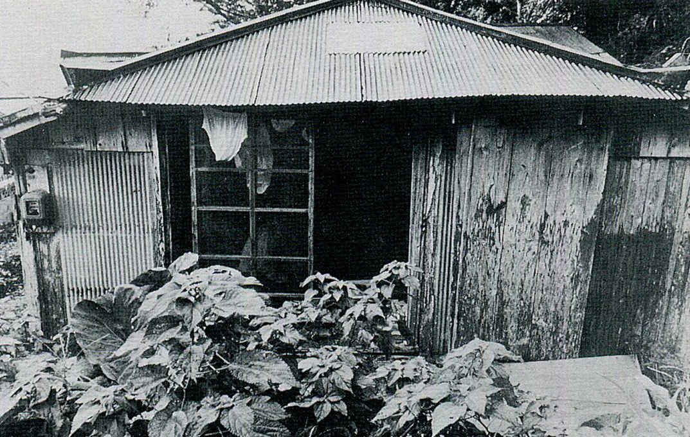
これはフィクションです。
アダンの画帖：田中一村伝 南日本新聞社編 小学館1995.4
絵のなかの魂：評伝・田中一村 湯原かの子新潮社2001.9
神を描いた男・田中一村 小林照幸 中央公論社1996.10
田中一村の彼方へ：奄美からの光芒 加藤邦彦 三一書房1997.10
田中一村の世界：孤高・異端の日本画家 ＮＨＫ出版 1995
田中一村豊饒の奄美 大矢鞆音 日本放送出版協会2004.4
もっと知りたい田中一村 ： 生涯と作品 大矢鞆音 東京美術2010.5
評伝田中一村 大矢鞆音 生活の友社 2018．７
「奄美の画家」の裸婦スケッチ
無数の『田中一村』たちに贈る物語
―アーティストラブ12―
発行 2019年 3月18日 初版発行
著者 角間貴生（かくまたかお）
Copyright Takao Kakuma 2019
発行所 出版工房ゆめらいふ
〒811-1346 福岡県福岡市南区老司５－５－２０
Web: https://artwonderlandyumelife.jimdo.com/
Email: yumelife@outlook.jp